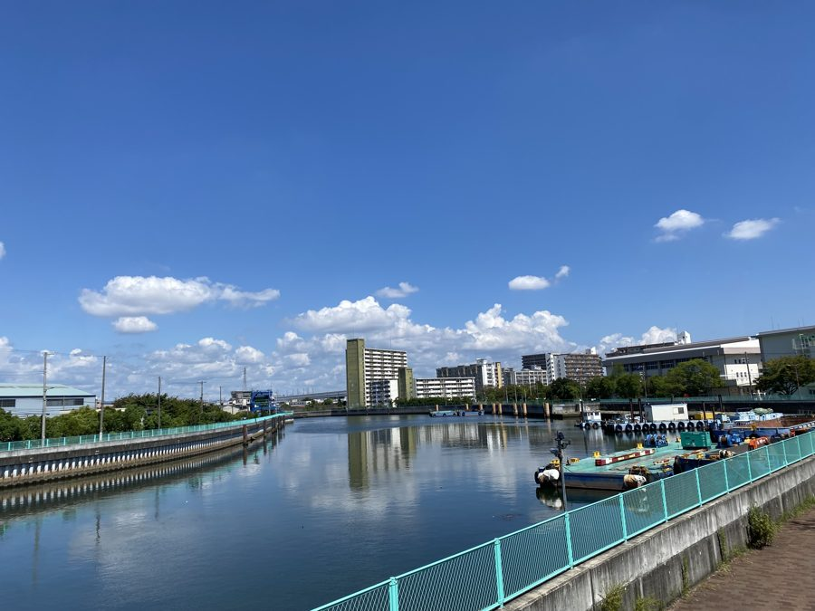
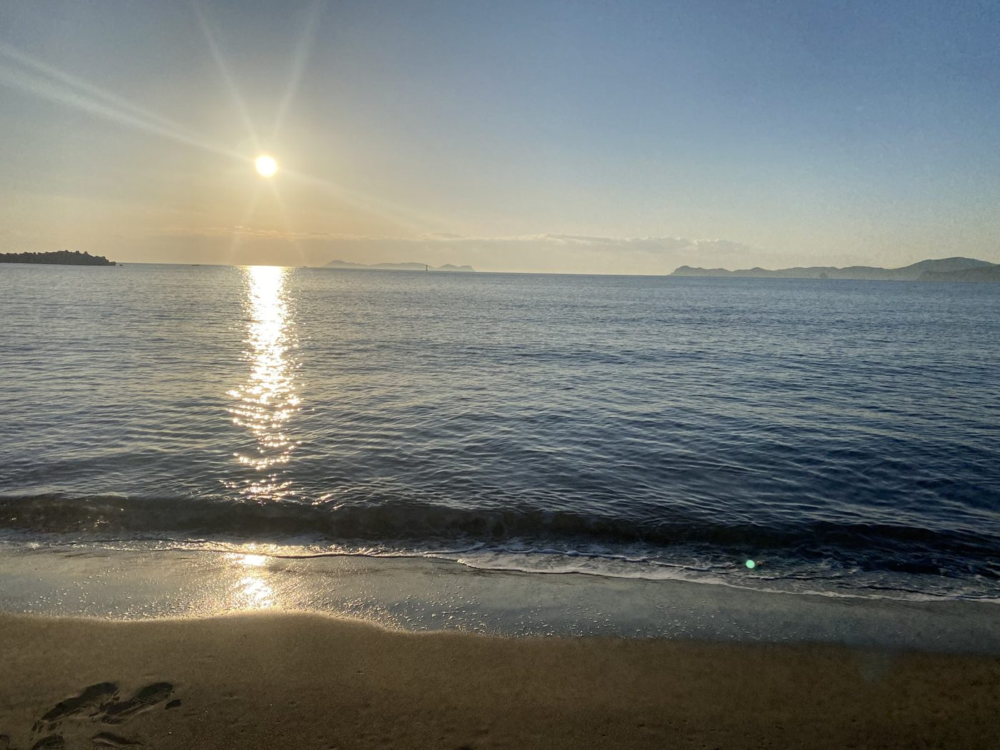
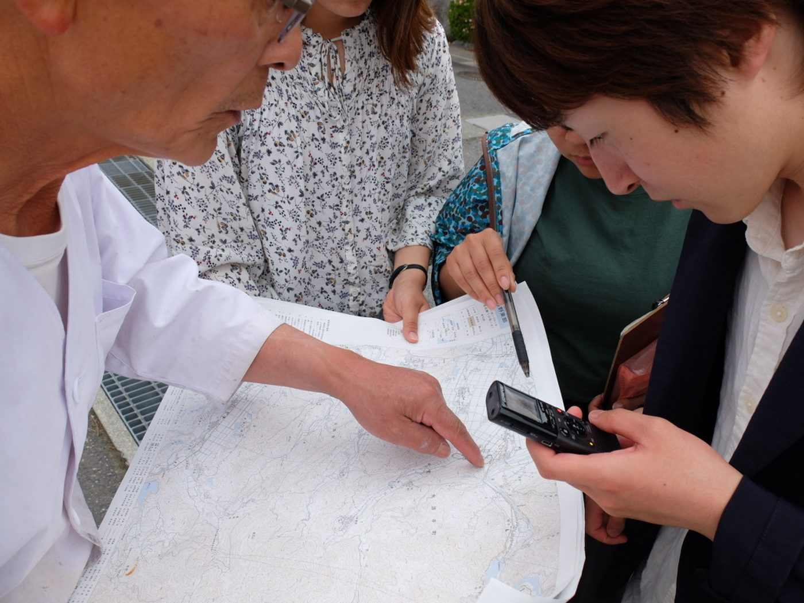
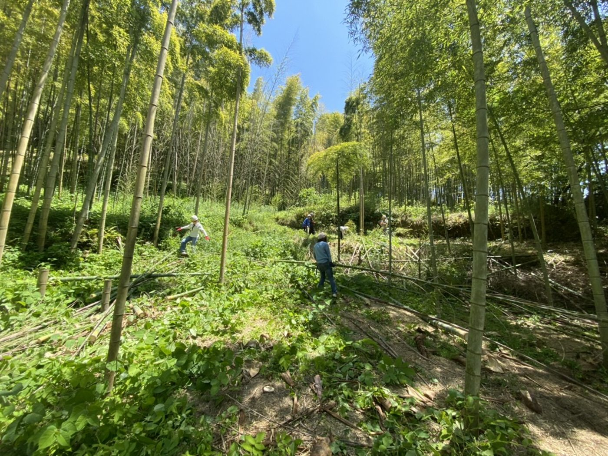

公害の経験を、未来につなぐ。 環境ガバナンスを、現場から考える。 若者と、社会をつなげる。 地域の自然と、かかわり直す。
01 — About
プロフィール
龍谷大学政策学部 教授
専門分野は環境社会学、環境政策論。環境問題を解決しようとする人間社会の動態、自然-社会-人間の相互作用を通じた主体形成に関心を持っています。
学部・大学院の講義、卒論・修論・博論指導のほか、NPO／NGOや地域団体等と連携した実践的活動にも取り組んでいます。
愛知県生まれ、京都府在住。
座右の銘は「狭き門より入れ」および「果報は寝て待て」。
02 — Research
研究プロジェクト
2026–2029 ／ 科研費 基盤研究(C)
「公害」言説の再構築に向けた環境修復的正義のパブリック・ヒストリー実践
パブリック・ヒストリーの実践による公害経験の継承を、環境修復的正義として位置付け、「公害」言説の再構築を目指す。
プロジェクト詳細ページを見る → KAKEN で詳細を見る →2022–2026 ／ 科研費基盤研究(C)
「困難な歴史」としての公害経験を学習し継承する主体形成過程の研究
学校教育（高校・大学）、地域づくり、表現活動等の領域において、「困難な歴史」としての公害経験を学習し継承する実践の事例研究に取り組み、そこで生じている主体形成過程の解明を試みた。
KAKEN で詳細を見る →2024.3–2025.2 ／ 公益財団法人日立財団 第55回倉田奨励金（人文・社会科学研究部門）
非体験者の公害経験継承実践による学習効果の検証——公害地域の生活史制作を通した価値観形成
公害経験者（被害者、地域住民）の生活史制作の実践を通した大学生の意識変容のありようを明らかにした。
日立財団で詳細を見る →2023.10–2024.9 ／ ニッセイ財団 若手・奨励研究助成
若者の環境意識と環境倫理の日中比較
若年世代の環境意識構造を明らかにし、環境保全に向けた行動変容をもたらす環境倫理の生成過程を明らかにする。
ニッセイ財団で詳細を見る →03 — Publications
出版・公表
論文・書籍・口頭発表・その他（MISC）それぞれの最新3件を掲載しています。全件は researchmap をご覧ください。
05 — Activities
社会活動
06 — For International Visitors
For International Visitors
I conduct research in environmental sociology and environmental policy, focusing on the transmission of pollution experience, environmental justice, and community regeneration in Japan.
For detailed information about my publications, research projects, and other academic activities in English, please visit my researchmap profile below. This site is written in Japanese, but your browser's translation feature can also help.
My researchmap profile (English / Japanese) →07 — Contact
お問い合わせ
研究・教育・社会活動に関するお問い合わせは、以下よりご連絡ください。